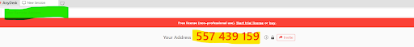

First step is to take remote connect to a working PC using AnyDesk(if customer doesn't have any ask him to download from https://150.co.il/
Once customer gets AnyDesk opened he should see his Address as below (highlighted in yellow)
any desk

You need to type the number in the field above it (highlighted in green)
Ask customer to approve connection and accept elevation
Then you are connected to the client PC we need to troubleshoot the network
Go to Start , type CMD and inside the command prompt (cmd) type in ipconfig
Search for IPv4 notice the IP address and the default gateway
Run ping command to the default gateway number and notice the response
E.x. - ping 10.0.0.138
Above is an example of a good connection